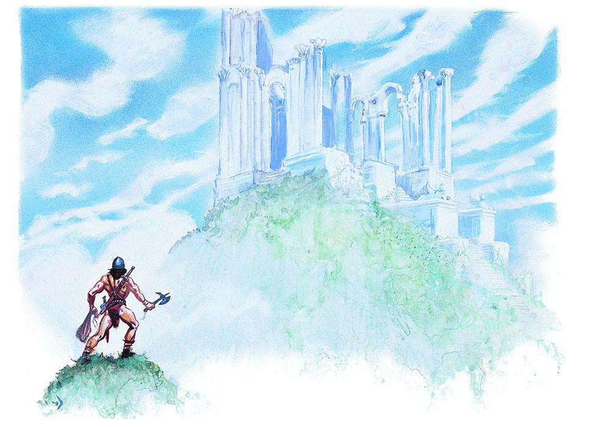

欢迎来到高级龙与地下城游戏

欢迎来到AD&D游戏（Welcome to the AD&D Game）！
你正在阅读的是这个世界上最有意思的爱好――角色扮演游戏的关键部分。
这几页将为您介绍的是自出版以来最成功的角色扮演游戏的第二版。如果你是角色扮演的初学者，那么请停止阅读并将书翻到真正的基础（在下一页）。当你明白到角色扮演游戏和AD&D是什么之后，再回到这里阅读这些介绍。如果你是有经验的角色扮演玩家，请跳过真正的基础。
如何组织起规则书（How the Rule Books are Organized）
AD&D规则书主要是作为参考书籍而被编纂的。它们所设计的任何具体规则可以在游戏中被快速而简单地发现。
玩家需要知道的所有内容都在玩家手册?里。这意味着并非所有的规则都被收录在这本书中。但玩家应当知道的所有内容都在这本书中。
有一些内容被收录到地下城主指南?（DMG）中。其中包括了那些很少见的与给地下城主（DM）的信息，玩家不应该事先知道这些。所有在地下城主指南中的信息都是只有DM才需要的。如果DM认为玩家应当知道某些在DMG中被列出的东西，他可以告诉他们。
和DMG类似，怪物图鉴所补充的是DM应当知道的东西。这本书收录了有关怪物、人以及其他居住在AD&D世界中的生物的完整且详细的信息。某些DM或许不介意玩家阅读这些信息，但如果玩家不知道他敌人的所有信息，游戏会变得更加有趣――因为这会增加探索的感觉与未知的危险。
学习这个游戏（Learning the Game）
如果你之前已经体验过AD&D游戏，那么你已经知道运行第二版所需要的一切。我们建议你阅读整本玩家手册，但这是个大工程。在坐下来进行游戏前，请确保自己至少已经阅读过第1、2、3和4章了。
如果你看到一个你不能理解的术语，请到术语表中查询。
如果你之前从未接触过AD&D游戏，那么学习如何进行游戏的最佳方法就是找一个有老练玩家的队伍并加入它。他们能够让你快速进入游戏并告诉你需要知道的东西。你不需要事先阅读任何东西。事实上，最棒的情况莫过于在阅读规则书前你已经和老练玩家们一起游戏数小时。关于角色扮演游戏的其中一个不可思议的事情就是：这个概念很难被解释清楚，但它能够被非常简单地演示出来。
如果你的朋友中没有人体验过这个游戏，那么找到老练玩家的最好途径便是通过本地的兴趣商店。角色扮演与一般的游戏的俱乐部都是很常见的，而且它们都总是希望能够接收到新的成员。很多兴趣商店会提供一个公告栏，DM可以通过这个公告栏来发出招收新玩家的广告，而玩家也可以询问能否加入一个新的或是正在进行的游戏。如果在你家附近没有兴趣商店，那就去学校或者当地图书馆找找看吧。
如果你的周围找不到知道AD&D游戏的人，你也可以自学成才。阅读玩家手册并创造一些角色。你要尝试着去建立各种各样的角色。然后挑选一个预先打包好的适合低等级角色冒险的模组，在聚集两三个朋友之后投入游戏之中。你可能会犯很多错误，甚至怀疑自你己做的任何事情都是错误的。即使真的如此也没有关系。虽然AD&D的世界非常宽广，但它最终都会在你的控制之下。
来自D&D?游戏（Coming from the D&D? Game）
如果你是从D&D游戏转到AD&D游戏的玩家，你需要做一些特别的改变。你知道角色扮演所需要的一切，但是你仍需要改变与适应某些不同的行事方式。
两个游戏之间的很多术语都非常相似。不要因为这种误导而使你认为这两个游戏是相同的。两者之间存在很多细微的差别（也有一些明显的），你需要仔细阅读本书中的规则并找出它们。
要特别关注玩家角色的种族、职业、阵营、武器和护甲，以及法术描述等章节。在讨论规则时，这两个游戏的术语非常相似，有时候甚至是相同的。这些相似之处可能掩盖着重要的区别，比如在规则运行的方法上，又或者是在数字的运算上。
总的来说，想要了解AD&D游戏，最好将这个游戏当作一个全新的游戏，这样你会在发现与D&D游戏规则相同之处时感到惊喜。不要在两个游戏中有相同名字的规则、道具或法术上犯下想当然的错误。
AD&D游戏系列（The
AD&D Game Line）
已经有不少与AD&D相关的书籍出版了。作为玩家，你只需要这些书中唯一的一本――也就是这本书就够了。所有的玩家和DM都应该有一本玩家手册的副本。其他的书都要么是可选的内容，要么是为DM准备的。
地下城主指南对DM来说是必不可少的，并且该书只面向DM。本身不是DM的玩家没有理由去阅读这本书。
怪物图鉴中增加的内容同样是DM需要的内容。这当中包括了所有常见的怪物、神秘的野兽以及传奇的生物。此外进行了额外补充的就是可以用于特定AD&D设定的怪物纲要年鉴?，例如鸦阁?和被遗忘的国度战役?设定集。这些补充提供了大量可用的怪物，向使用上述设定的DM高度推荐。
扩展系列――完全战士手册，完全盗贼手册等――提供了比玩家手册上更详细的细节。这些书的内容都是可选的。它们为那些想要让自己的角色在世界中拥有更多选择的玩家而生。
冒险模组包含了一个完整的冒险游戏。它们对于那些不知道怎么去创造属于自己的冒险故事、需要快速的冒险故事、以及没有时间写属于自己的冒险故事的DM而言是非常重要的。
关于人称代词（A Note About Pronouns）
男性的人称代词专门用于AD&D游戏规则。我们希望这不会被任何人解读为这是个排斥女性的游戏或者成为他们排斥女性参与游戏的理由。男性的人称代词在几个世纪以来的使用中已经使变得中性化。它在书面材料的书写上是清晰、简洁和熟悉的。除此之外没有别的意思。